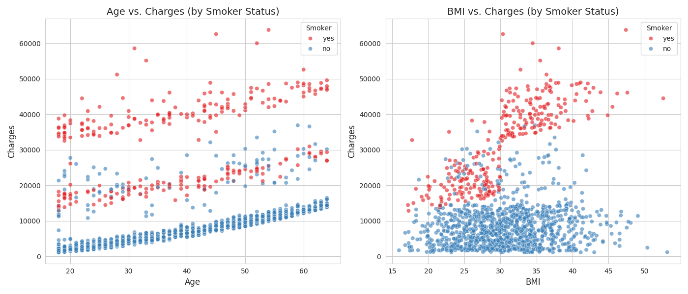
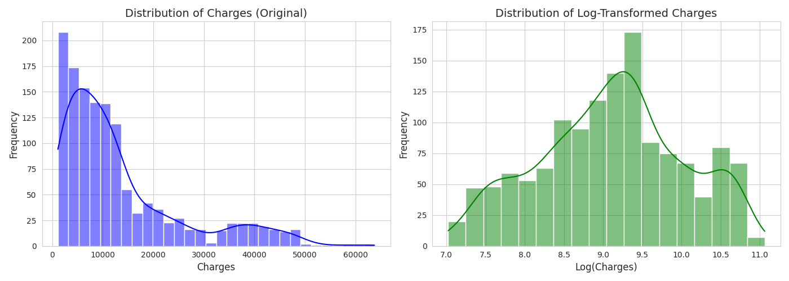
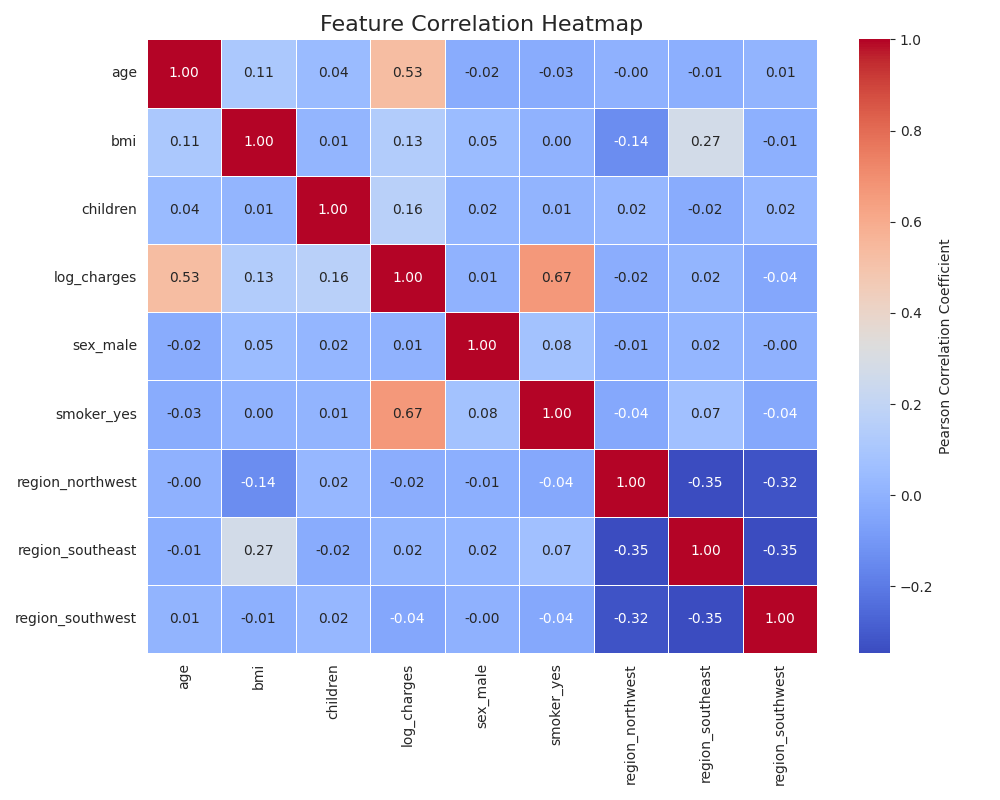
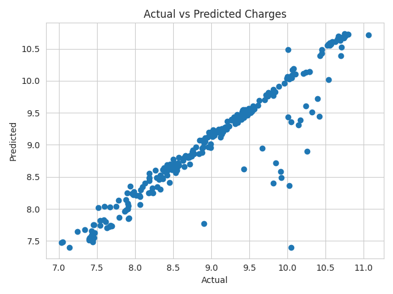

Medical insurance cost prediction
What makes one policyholder cost four times more than another? I explored 1,338 policies, engineered risk features, compared four models and tuned the winner. It predicts annual charges within about $2,000 on average.
- Question
- Which traits drive medical insurance charges, and how well can we predict them?
- Data
- 1,338 policyholders · 6 features · charges in USD
- Method
- Gradient boosting on log(charges), tuned with 5-fold GridSearchCV
- Result
- R² 0.874 · MAE $1,975 · RMSE $4,418 (in dollars)
1 · What the data says before any model
Each record is one primary beneficiary: age, sex, BMI, number of children covered, smoker status, US region and the annual charge. Charges run from $1,122 to $63,770, with a median of $9,382 and a mean of $13,270. A mean that far above the median means a long tail of very expensive policies.

| Annual charges | Non-smoker | Smoker |
|---|---|---|
| Policies | 1,064 | 274 |
| Mean | $8,434 | $32,050 |
| Median | $7,345 | $34,456 |
| Std dev | $5,994 | $11,542 |
| Max | $36,911 | $63,770 |
Smokers average about 4× the cost of non-smokers, and their costs vary twice as much.


2 · Features that encode health risk
The scatter plots show the smoking effect gets much larger for people with obesity. A linear model can't see that on its own, so I gave it three explicit features:
# BMI of 30 or more is the clinical threshold for obesity df['is_obese'] = (df['bmi'] >= 30).astype(int) # the combination is far costlier than either trait alone df['smoker_obese_interaction'] = ((df['smoker'] == 'yes') & (df['is_obese'] == 1)).astype(int) # life stages rather than a straight line in age df['age_group'] = pd.cut(df['age'], bins=[18, 30, 45, 65, 100], labels=['Young_Adult', 'Middle_Adult', 'Senior_Adult', 'Elderly'], right=False)
3 · Four models, one held-out test set
I one-hot encoded the categories, held out 20% of policies for testing, and trained four regressors on log(charges). Lower error is better; R² is the share of variation the model explains.
| Model (log scale, test set) | MAE | RMSE | R² |
|---|---|---|---|
| Linear regression | 0.254 | 0.401 | 0.821 |
| Decision tree | 0.188 | 0.419 | 0.804 |
| Random forest | 0.197 | 0.374 | 0.844 |
| Gradient boosting | 0.184 | 0.347 | 0.866 |
Linear regression can't bend around the interactions. The tree ensembles can, and gradient boosting did best on every metric.
Tuning
A 5-fold grid search over 384 combinations of trees, learning rate, depth, split size and subsampling picked a slow, shallow model: 500 trees at a 0.01 learning rate, depth 3, with 80% subsampling. Shallow trees and subsampling keep it from memorising the training data. Train and test scores came out almost identical (R² 0.857 vs 0.866), so it generalises.

4 · What it means in dollars
Back in dollars, the typical prediction is within about $2,000 of the real charge. RMSE is higher because it weights the rare very expensive policies more heavily, and those are the hardest to predict. The most important features were smoking, age, number of children and BMI.
What I'd tell a pricing team: smoking status is the lever. Combined with obesity it explains most of the extreme claims, so it belongs at the centre of any risk tier, while sex adds almost nothing.